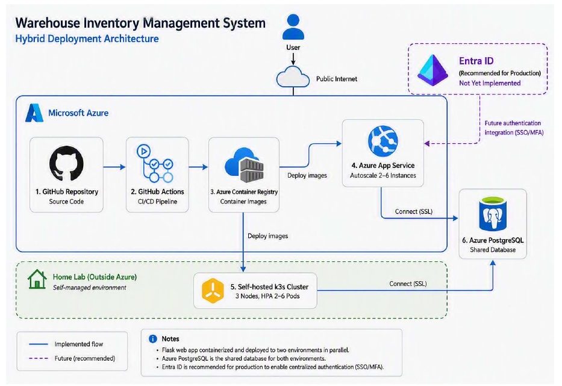

Mohammad Shahrazin
Singapore
Singapore
I am an aspiring Cloud Support & DevOps Engineer currently transitioning into cloud and infrastructure technology through intensive technical training, hands-on projects and self-directed learning.
My interests include cloud infrastructure, Linux administration, automation, containerization, databases and platform engineering. To complement my bootcamp training, I maintain a self-hosted Proxmox home lab where I explore technologies such as Terraform, Kubernetes (K3s), ArgoCD, Prometheus, Grafana, Loki, PostgreSQL and Microsoft Azure.
Through personal projects and my bootcamp capstone project, I have gained practical experience deploying applications across both Microsoft Azure and self-hosted environments using CI/CD pipelines, containerized workloads and cloud-native technologies.
I am seeking an entry-level opportunity where I can continue learning, contribute to real-world environments and build a strong foundation in cloud operations, infrastructure and DevOps practices.
Currently completing an intensive 3-month Cloud Support & DevOps bootcamp with Generation, covering Linux, Python, Microsoft Azure, Docker, Terraform and Ansible.
Beyond the bootcamp, I maintain a self-hosted Proxmox home lab where I explore cloud infrastructure, platform engineering and cloud-native technologies through hands-on experimentation.
My lab includes Infrastructure as Code using Terraform, a multi-node K3s Kubernetes cluster, GitOps workflows with ArgoCD, monitoring with Prometheus, Grafana and Loki, and application deployments spanning both self-hosted and Microsoft Azure environments.
This environment allows me to gain practical experience deploying, operating and troubleshooting systems while continuously building my knowledge of cloud operations, infrastructure and DevOps practices.


A Flask-based personal portfolio site with a community comment board, built to learn Flask fundamentals. Later became my testing ground for containerizing an app with Docker, deploying to a self-hosted Kubernetes cluster, and building a CI/CD pipeline with Azure DevOps.
Built with: Flask, Docker, Kubernetes, Azure DevOps
Contributors: Sole developer
@app.route("/community-board", methods=["GET", "POST"])
def community_board():
if request.method == "GET":
return render_template(
"community_board.html",
comments=Comment.query.all()
)
if not current_user.is_authenticated:
return redirect(url_for("login"))
comment = Comment(
content=request.form["contents"],
commenter=current_user
)
db.session.add(comment)
db.session.commit()
return redirect(url_for("community_board"))



A role-based warehouse inventory management system developed as my bootcamp capstone project. The application includes separate supervisor, inbound, and outbound dashboards, transaction accountability tracking, and account security features.
The solution is containerized and deployed across both Microsoft Azure and a self-hosted Kubernetes environment. GitHub Actions is used for CI/CD, Azure Container Registry stores container images, and Azure PostgreSQL serves as the shared database platform.
To deepen my understanding of cloud-native technologies, I also deployed the application to a 3-node K3s cluster running within my Proxmox home lab, allowing me to gain hands-on experience with container orchestration, deployment automation, and hybrid hosting architectures.
Contributors: Repo owner
class Transaction(db.Model):
__tablename__ = 'transactions'
id = db.Column(db.Integer, primary_key=True)
txn_type = db.Column(db.String(10), nullable=False)
quantity = db.Column(db.Integer, nullable=False)
status = db.Column(db.String(10),
default='PENDING',
nullable=False)
Self-hosted platform engineering environment built on Proxmox VE to develop practical experience with Infrastructure as Code, Kubernetes operations, GitOps workflows, monitoring and cloud-native technologies.
The environment includes a Terraform management node (VM100), a dedicated K3s cluster comprising VM101, VM102 and VM103, hosting ArgoCD, Prometheus, Grafana, Loki and Nextcloud.
The platform supports experimentation with Infrastructure as Code, GitOps, observability, Kubernetes administration and self-hosted services, while complementing application deployments across both Azure and self-hosted environments.
Technologies: Proxmox VE, Terraform, Linux, K3s Kubernetes, ArgoCD, Prometheus, Grafana, Loki, Nextcloud
Contributors: Sole administrator